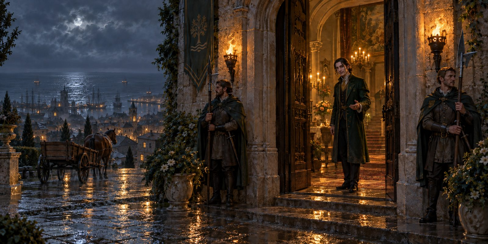
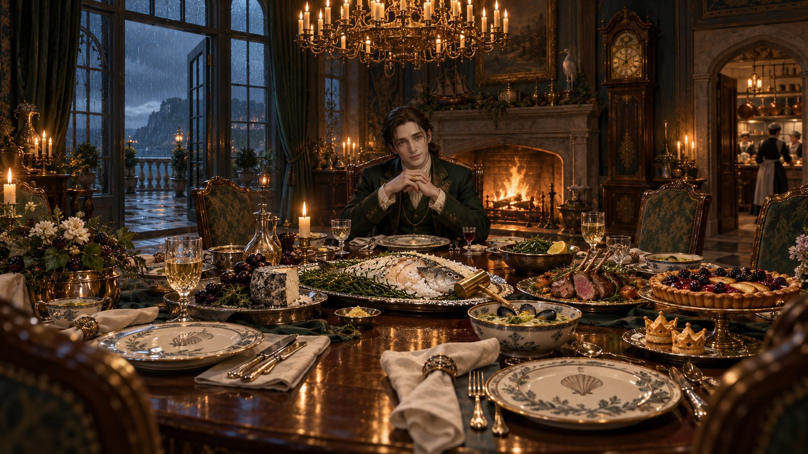

Previous: Session 26
Before dinner
-
Quinn’s curse stirred, but he rolled a natural 20, boxed the intrusion up and set it aside for a while.
-
Osric had come to the Green Leaf an hour earlier, muttered “those bastards” and stormed back out.
-
Odettia’s bite. In the mirror: two closed punctures, cold skin, and fine black lines spreading along her veins. She isn’t turning yet, but if the lines pass the point she marked, symptoms begin. At the chapel the old priest said he can cure it on three conditions:
- The vampire that bit her must be destroyed or willingly release her.
- It must be done within three days at most.
- He needs something tied to the attacker, ideally from where she rests.
Quinn followed her there, unseen.
-
Laura’s confession. Vander and Kaelith visited Laura, and Vander added 20 gold to her bag before she would talk. What she told them:
- For twelve years a coven of frightened vampires has lived in her cellar. She sheltered them, fed them animals in secret, and made sure their weekly bottled blood arrived from the harbour, in carts bearing the governor’s symbol. Harlan never knew.
- A few nights ago Harlan beat her. The coven came, and their leader, Isolde, asked, “Do you want me to take care of this?” Laura said yes.
- Isolde said the last human she had wanted to kill was the old governor, twelve years ago.
- The blood shipments stopped a week or two ago. Since then the coven has gone feral and hunts openly.
Laura is leaving the island. Luna gave her a parting blessing.
-
Dressing up. Odettia lent Kaelith a dark green velvet gown and conjured a red one for herself with her hat of disguise. Vander and Quinn went as they were. Milo came as Odettia’s ward, in a tuxedo borrowed from Gerta (no shoes).
The manor

- Leon Thrace met them at the door: dark green coat, a chain around his neck vanishing under his shirt. His guards let them keep their weapons but warned that anyone who draws one dies. One guard is named Voss. Leon told them that cats have protected his house for generations, and stroked Luna.
- The tour:
- Portrait gallery. A pale gap between the old governor and Leon where his mother’s portrait hung. His father took it down soon after she died, more than ten years ago, when Leon was very young.
- A nailed-shut door. The east-wing stair to the old dungeon, sealed by Leon after his father died, “for the better of the community”.
- Rooftop conservatory and office. Moonflowers, his mother’s favourite, which he tends himself; Kaelith judged them flawlessly cared for. A lifelong illness kept him bedridden until the house medic brought a cure from overseas. His father died of illness after running himself into the ground. Odettia’s magical senses caught only faint threads of something dormant in him.
- Leon’s philosophy. Pain should be acknowledged and put right, not memorialised. His father ruled by fear and was a softer man before Leon’s mother died.
Dinner

- The table. A round table (“so we converse as equals”), six guards, a hundred-candle chandelier. Courses of broth, then sea bass, his mother’s favourite. Her name was Celandine.
- Small details:
- A guard mentioned a Gundwynd trader due in a few days.
- Leon barely ate; he says his illness left him on a liquid diet. His glass was filled only from “his lordship’s cellar wine”. Quinn thought he smelled iron somewhere in the room.
- Leon’s request. Seven townspeople killed in two weeks, drained of blood. One was the captain of the guard, three days ago. His guards would be “fodder”. On his first day as governor he sent a negotiator to the coven, and they sent back his head. He offered 800 gp (300 up front) to remove the coven. He also offered to tell the party what he knows about the Tideworth’s cargo if they help.
- An eighth victim was reported during dinner. Later a guard announced they had trapped a vampire in a fortified building and shot her from the rafters. Odettia asked that the body be kept.
- The party asked for a night to decide. Leon retired at eleven because of his “poor constitution”. When Quinn asked why he would kill his own kind, Leon said, “I’m sure I don’t know what you mean.”
Quinn’s errand
- Slipping out unseen, Quinn found a quiet room with the same tapestry as in the farm cellar, this time with names stitched beneath: Celandine and Isolde. Along the hem: “Sister for sister, thread for thread, pull the name of the one not wed.” Pulling the thread of Isolde’s name opened a hidden pocket:
- Celandine’s last letter to her sister: “He knows. Keep the boy safe if I can’t. Love, your sister.”
- a travel bag with 100 gp and survival tools
- In the orchard he met Isolde. “You walk quietly, little hunter… someone with fangs, I think.”
- She wants a life with Henrietta, but the town hunts her every night.
- “They killed my sister in front of me.” She holds everyone in the manor complicit.
- She asked Quinn to open the orchard door to let her in. He refused.
- She offered to release Odettia from the bite in exchange for Celandine’s letter. Quinn kept the letter for now.
- When Quinn called Leon her nephew, she laughed: “You think that thing in there is my nephew?… That is the one question I would love the answer to.”
- She will consult her coven, and warned that if Quinn crosses her, he’ll be the first she kills. He proposed meeting at Harlan’s farm at noon tomorrow; she didn’t answer.
Midnight
- Odettia secretly cast Clairvoyance on Leon’s desk in the conservatory. What she saw or heard is still to come.
- As the clock struck midnight, Kaelith’s hand turned translucent again. In her pack, Corv’s vial shook violently, its contents pooling downward, toward whatever lies beneath the manor.
- Guards cut the evening short (a second vampire sighting in town) and saw everyone out. On the way, Voss mentioned rumours of a red-haired wanderer elsewhere in the Moonshaes.
In the carriage
The party argued it through:
- Is Leon a vampire, something else entirely, or even an oblex?
- Why did the coven only turn violent once the old governor died and the blood stopped?
- Should they bring Leon and Isolde face to face?
Odettia felt no bond break, so the vampire the guards killed wasn’t the one who bit her. The likeliest plan is a return to the dungeons through the tunnel. Leon is still waiting for an answer.